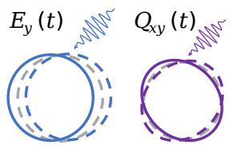
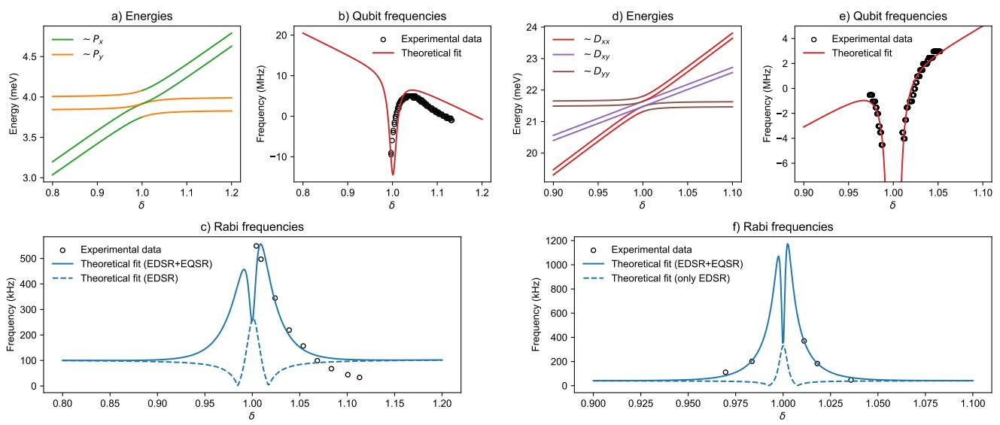

物理背景：EDSR 解释不了的增强
在电偶极自旋共振（EDSR）的标准图像里，微波栅电场与电子的相互作用在偶极近似下写作
其中 是交流电场幅度、 是电子位置算符、 是驱动频率。它通过一阶自旋轨道杂化系数 （连接 与 轨道）驱动自旋翻转，Rabi 频率 。这套描述要求增强只发生在 （轨道激发能与塞曼能接近）时——但实验中 ，比 大两个数量级，偶极通道根本无法共振。
Mai 等人分析硅 MOS 多电子量子点（5 电子与 13 电子，闭壳层之外各剩一个价电子，可用单粒子理论描述价电子）的实验数据时发现两条 EDSR 解释不了的线索：其一，单电子（纯 轨道）量子点没有观察到 Rabi 增强，增强只出现在具有二重/三重轨道简并的 、 轨道占据的多电子区；其二，向简并点调谐栅压 时 几乎不变，偶极矩阵元中 的依赖无法产生观测到的增强。这两点共同指向：需要一个只作用于激发轨道、且在轨道近简并时被放大的新耦合项。（多电子点的轨道填充序列本身可由含谷自由度的 Hartree-Fock 建模系统给出——见常相互作用模型词条”超越 CI”一节。）
四极驱动项
把驱动电场对电子位置做二阶泰勒展开，即引入四极场分量
其中 是静电势、 是电场 分量、 描述电场沿 方向的梯度（应变率）。完整的交流驱动哈密顿量变为
物理图像上（见下图），偶极场 使势阱整体平移，四极场 使势阱沿 对角轴拉伸/压缩——算符 具有 对称轴，恰好允许连接 、 宇称相反的轨道对（，以及 13 电子区的 ），这是偶极算符 做不到的。

偶极场与四极场对静电势的不同作用：横轴为空间坐标，偶极交流场（左）使势阱整体平移，四极交流场（右）使势阱沿正交轴交替扩张与收缩。四极场沿 的对称性使其能耦合 、 宇称相反的轨道。图源：Mai et al., PRX (2025)，Fig. 3。
杂化态与 Rabi 频率
电子态由 Rashba–Dresselhaus 型自旋轨道哈密顿量
杂化（、 分别是来自异质结构对称性降低与 Si/SiO₂ 界面的 Rashba、Dresselhaus 系数， 是自旋泡利矩阵， 是波矢）。5 电子区量子比特的两个本征态为
其中 来自 的一阶微扰（ 通道，）， 来自二阶微扰（再经 到 ）， 是归一化常数。由耦合通道可直接读出标度关系
含四极项的共振 Rabi 频率（论文 Eq. (9)）为
前两项是常规 EDSR 通道（系数 ），后两项是 EQSR 通道（系数 ）。关键在共振条件不同：EDSR 要求 （无法满足），而 EQSR 的 系数在两个激发轨道的能量差逼近塞曼能时急剧增大：
其中 、 是两个正交方向轨道激发的圆频率。这个条件可以用栅压实现——椭圆率（ellipticity）
随栅压 近似线性变化（COMSOL 静电模拟 + 单粒子能级计算证实），把 调向 1（量子点变圆、轨道近简并）即进入 EQSR 增强区。
实验拟合：为什么必须包含 EQSR
论文同时拟合比特频率谱（）与 Rabi 频率随椭圆率 的变化。只用 EDSR 的拟合无法重现简并点附近的 Rabi 增强；加入 EQSR 后，5 电子区（ 轨道）与 13 电子区（ 轨道）的数据都能被同一模型覆盖。实验中 Rabi 频率在简并点附近增强约一个数量级，且增强峰值出现在比特频率 Stark 移斜率最大处（而非轨道反交叉处）——这正是四极耦合、而非偶极耦合的特征指纹。

EQSR 模型拟合结果，横轴均为椭圆率 ：(a)(d) 为参与驱动的 （5 电子）与 （13 电子）轨道能级；(b)(e) 为比特频率谱（黑点为实验、红线为拟合）；(c)(f) 为 Rabi 频率（黑点为实验、蓝线为含 EQSR 的完整模型），虚线为只含偶极 EDSR 的预言——在简并点附近明显低于实验值，说明四极通道是增强的主导来源。图源：Mai et al., PRX (2025)，Fig. 4。
量级与适用条件
- 多极展开的有效性：COMSOL 模拟给出 ，量子点线度 ，因此 ，四极项确实是小修正——它的可见性完全来自 系数在轨道近简并时的共振放大，而非四极场本身很强。
- 轨道类型要求：增强依赖激发轨道的多重简并（ 的二重、 的三重），单电子 轨道量子点不适用；多电子闭壳层加一个价电子的组态（5e、13e）是理想平台。
- 尺度规律的两条旋钮：EDSR 增强看 ，EQSR 增强看 。若 与 之差足够大，简并点附近的快速驱动无需微磁体即可实现——对规模化架构（少一层磁性工艺）是直接利好。
- 谷自由度：模型中谷二重简并只允许每个 态占两个电子，对驱动机制本身无影响；但实际器件中谷劈裂与轨道能级的相对大小会影响可用工作点。
与其他概念的关系
- 电偶极自旋共振（EDSR）：同一驱动场的低阶（偶极）与高阶（四极）展开；两者的共振条件、轨道选择定则和 SOC 尺度规律都不同（ vs ），EQSR 补上了 EDSR 在多电子激发轨道区无法解释的增强。
- 自旋轨道耦合：Rashba/Dresselhaus 项是两种驱动共同的中介，把电驱动转换为自旋翻转；EQSR 特用的是其二阶微扰通道。
- 单比特门：EQSR 是激发轨道区全电驱动单比特旋转的候选机制，尤其适合不希望集成微磁体的平面工艺。
- Rabi 振荡：EQSR 的实验证据就是简并点附近 Rabi 频率的一个量级增强及其随椭圆率的系统变化。
- 半导体量子点与Si-MOS 量子点：理论基于 Si/SiO₂ 界面的硅 MOS 器件，椭圆率由静电栅连续可调。
参考文献
- Mai, P. Y. et al. Enhancement of Electric Drive in Silicon Quantum Dots with Electric Quadrupole Spin Resonance. Physical Review X (2025). DOI: 10.1103/gk5h-l7q4；arXiv:2502.01040（QAtlas 缓存：2502.01040）。
完整文献库（含各篇站内全文页）见 参考文献库。